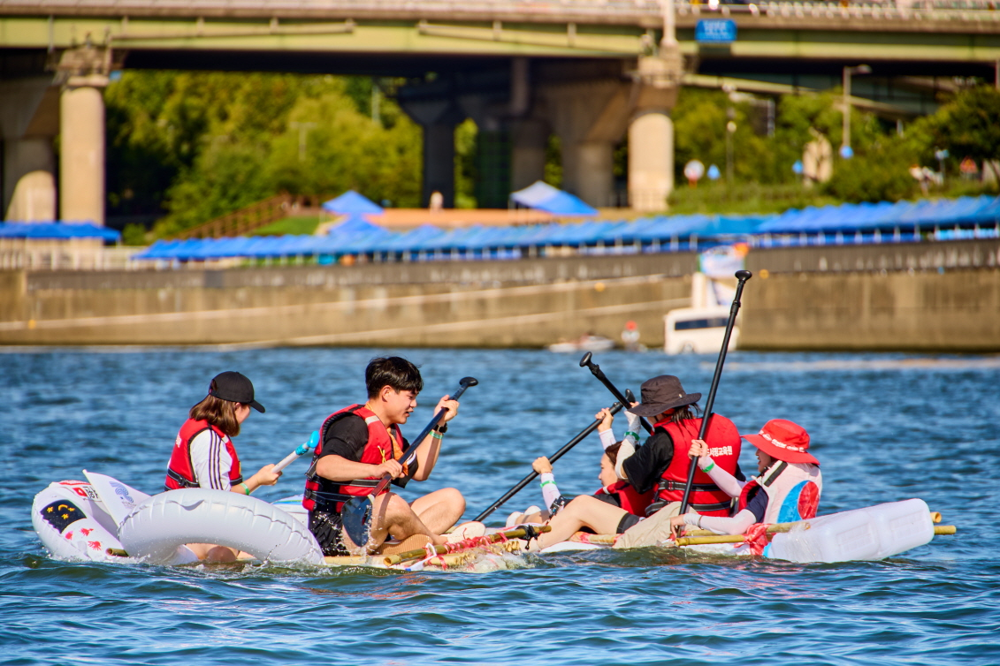

서울시 '2026 한강페스티벌_여름' 오늘 개막…9개 공원 16개 프로그램
수상드론쇼·무박2일·무소음DJ파티, 8월 16일까지 낮밤 한강 가득

[시사포커스 / 김재록 기자] 서울시가 8월 1일부터 16일까지 양화·난지·뚝섬·잠실 등 9개 한강공원과 수상·수변 일대에서 '2026 한강페스티벌_여름'을 개최한다. '가깝고도 확실한 피서지, 시원시원 한강'을 주제로 기획된 이번 축제는 문화공연·수상 레저·체험 프로그램 등 총 16개 프로그램으로 구성돼 낮부터 밤까지 시간대별로 즐길 수 있도록 마련됐다. 서울시는 멀리 떠나지 않고도 도심 한강에서 남녀노소 누구나 부담 없이 여름을 보내는 '가성비 바캉스'를 콘셉트로 이번 행사를 준비했다.
개막일인 8월 1~2일에는 양화한강공원 잔디마당에서 수면 위 무인 수상정 25대를 활용한 수상드론쇼와 재즈·K-POP 공연이 어우러지는 '한강썸머뮤직피크닉'이 열린다. 같은 기간 난지 물놀이장에서는 수영과 공연을 동시에 즐기는 '한강뮤직퐁당'이 진행되며, 8월 8일에는 망원한강공원 서울함공원 일대에서 드라마 정주행과 공포 영화 관람 등으로 이어지는 밤샘 프로그램 '한강무박2일: 밤샘한강ON'이 마련된다. 박진영 서울시 미래한강본부장은 “한강은 오래전부터 서울 시민들의 대표적인 피서지였다”며 “올해도 다양한 문화 공연과 수상 레저 체험을 통해 시민들이 낮부터 밤까지 한강에서 여름을 즐기고, 지역경제 활성화에도 기여하기를 기대한다”고 밝혔다.
매주 토요일에는 여의도한강공원 마포대교 하부에서 무선 헤드셋을 착용하고 DJ 음악을 즐기는 '한강무소음DJ파티'가 열리며, 뚝섬·광나루·여의도 한강공원 교량 하부에서는 강바람을 맞으며 영화를 감상하는 무료 '한강 다리밑 영화관'이 운영된다. 8월 15일 잠실한강공원에서는 직접 제작한 배로 수상 경주를 펼치는 '나만의 한강호 경주대회'도 개최된다. 수상 레저 체험 분야에서는 패들보드, 카약, 요트, 크루즈 등 다양한 프로그램이 축제 기간 10~50% 할인된 가격에 운영된다. 행사 세부 일정 및 참가 신청은 공식 누리집(seoul.go.kr/festa/hangang)을 통해 확인할 수 있다.